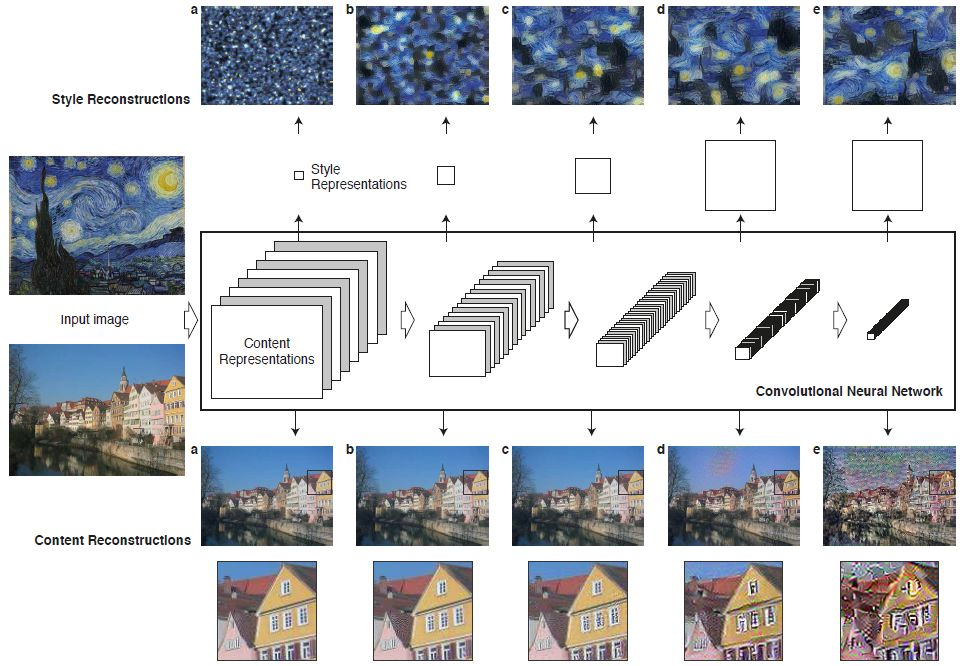
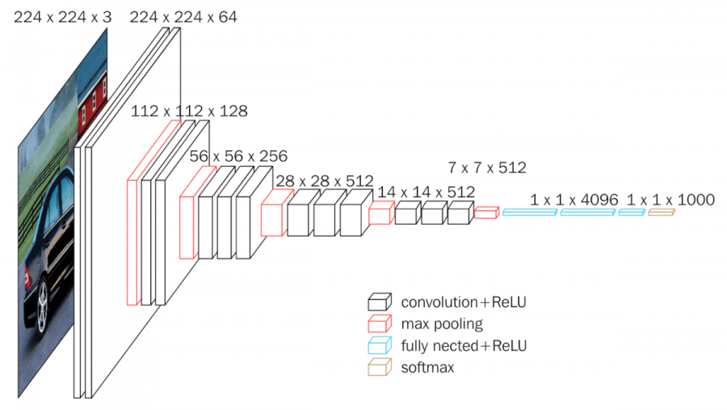
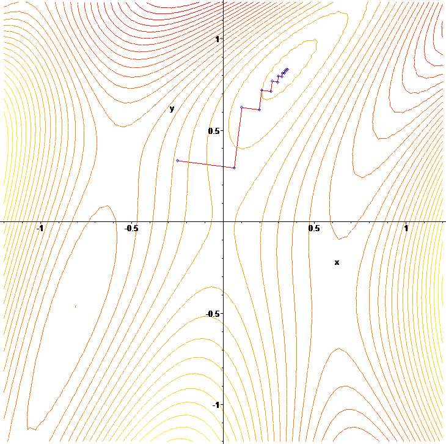
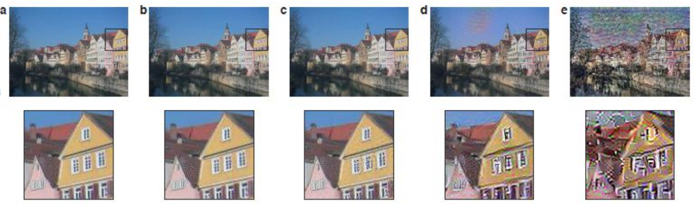
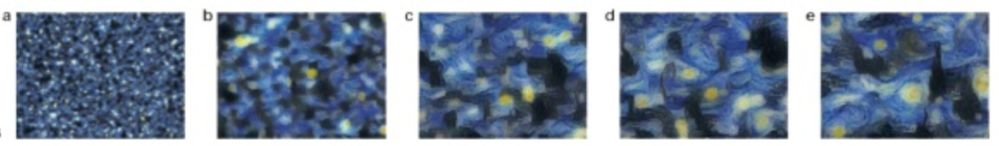
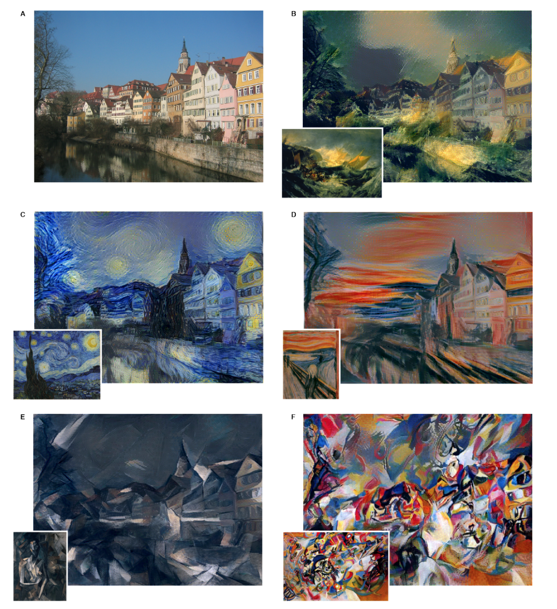
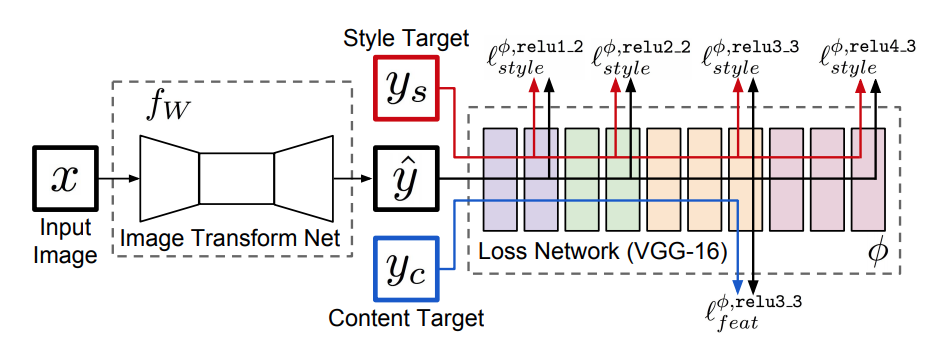
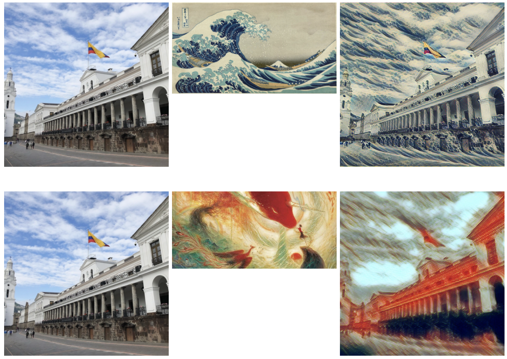
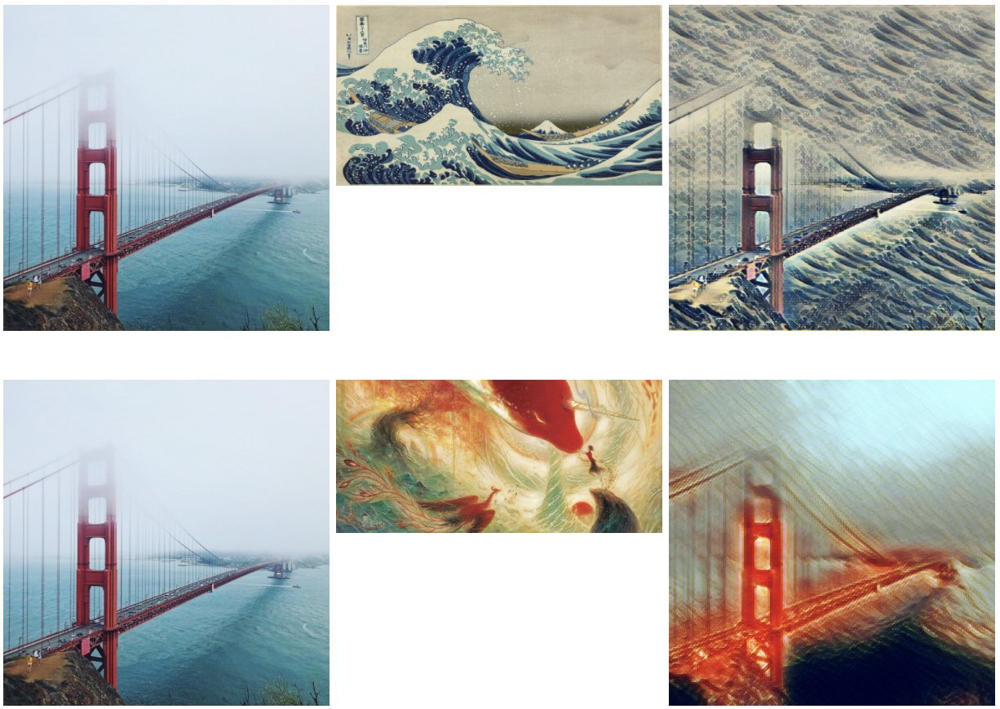
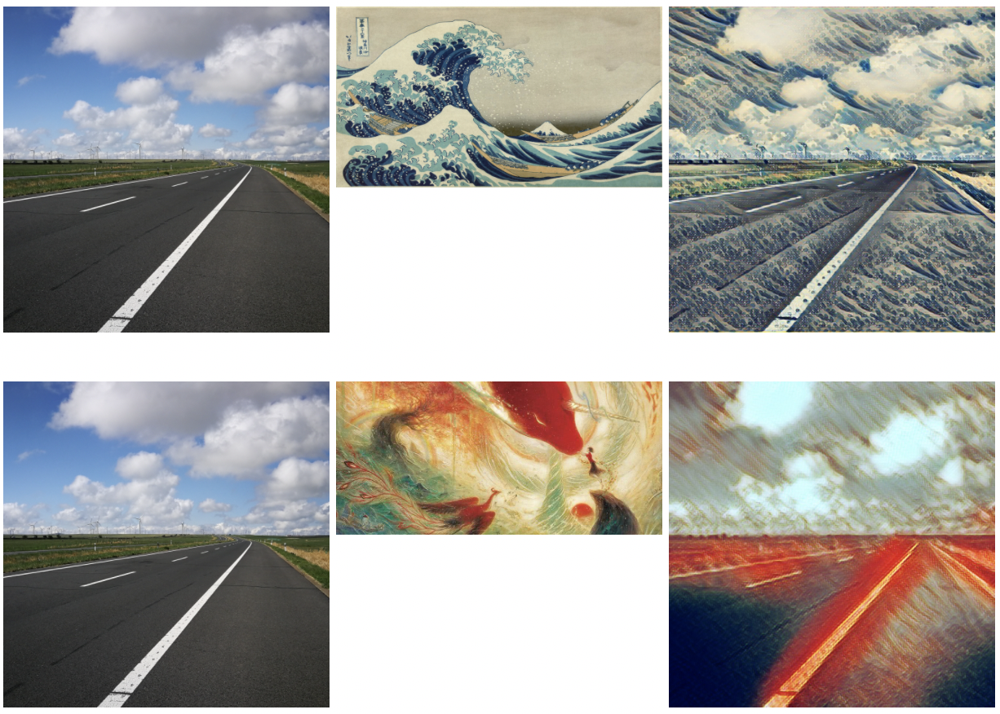

基本依据
基本原理：
- 两张图像经过预训练好的分类网络，若提取出的高维特征之间的(欧氏)距离越小，则这两张图像内容越相似
- 两张图像经过预训练好的分类网络，若提取出的低维特征在数值上基本相等，则这两张图像越相似，换句话说，两张图像相似等价于二者特征的Gram矩阵具有较小的弗罗贝尼乌斯范数。

VGGNet
VGGNet是牛津大学计算机视觉组（Visual Geometry Group）和Google DeepMind公司的研究员一起在2014年研发出的新深度卷积神经网络，并取得了ILSVRC2014比赛分类项目的第二名（第一名是GoogLeNet，也是同年提出的）和定位项目的第一名。VGGNet探索了卷积神经网络的深度与其性能之间的关系，成功地构筑了16~19层深的卷积神经网络，证明了增加网络的深度能够在一定程度上影响网络最终的性能，使错误率大幅下降，同时拓展性又很强，迁移到其它图片数据上的泛化性也非常好。
VGGNet是AlexNet（2012）的加深版，都是由卷积层、全连接层两大部分构成。VGGNet常用的结构有16层和19层，下面给出VGGNet16结构：


VGGNet结构说明：
- 输入224x224x3的图片，经64个3x3的卷积核作两次卷积+ReLU，卷积后的尺寸变为224x224x64
- 作max pooling（最大化池化），池化单元尺寸为2x2（效果为图像尺寸减半），池化后的尺寸变为112x112x64
- 经128个3x3的卷积核作两次卷积+ReLU，尺寸变为112x112x128
- 作2x2的max pooling池化，尺寸变为56x56x128
- 经256个3x3的卷积核作三次卷积+ReLU，尺寸变为56x56x256
- 作2x2的max pooling池化，尺寸变为28x28x256
- 经512个3x3的卷积核作三次卷积+ReLU，尺寸变为28x28x512
- 作2x2的max pooling池化，尺寸变为14x14x512
- 经512个3x3的卷积核作三次卷积+ReLU，尺寸变为14x14x512
- 作2x2的max pooling池化，尺寸变为7x7x512
- 与两层1x1x4096，一层1x1x1000进行全连接+ReLU（共三层）
- 通过softmax输出1000个预测结果
简单而言，VGGNet的本意是输入图像、提取特征并输出图像类别，前面的卷积层是从图像中提取特征，后面的全连接层是把图片特征转换为概率，其中VGGNet中的浅层（如conv1_1, conv1_2）提取的特征主要是像检测点、线、亮度此类比较简单的特征，中间层（如conv5_1, conv5_2, conv5_3）提取的特征主要是像有无人脸或某种特定物体的复杂特征。
梯度下降
梯度下降法（英语：Gradient descent）是一个一阶最优化算法，通常也称为最速下降法。 要使用梯度下降法找到一个函数的局部极小值，必须向函数上当前点对应梯度（或者是近似梯度）的反方向的规定步长距离点进行迭代搜索。如果相反地向梯度正方向迭代进行搜索，则会接近函数的局部极大值点；这个过程则被称为梯度上升法。

梯度下降法的缺点包括：
- 靠近极小值时速度减慢。
- 直线搜索可能会产生问题。
- 可能会“之字型”地下降
Gram 矩阵
Gram矩阵是一组向量的内积的对称矩阵，例如，向量组$\overrightarrow{x_{1}},\overrightarrow{x_{2}},\cdots,\overrightarrow{x_{n}}$的Gram矩阵为
$$ \begin{bmatrix}
(\overrightarrow{x_{1}}, \overrightarrow{x_{1}}) & (\overrightarrow{x_{1}}, \overrightarrow{x_{2}}) & \cdots & (\overrightarrow{x_{1}}, \overrightarrow{x_{n}}) \
(\overrightarrow{x_{2}}, \overrightarrow{x_{1}}) & (\overrightarrow{x_{2}}, \overrightarrow{x_{2}}) & \cdots & (\overrightarrow{x_{2}}, \overrightarrow{x_{n}}) \
\cdots & \cdots & \cdots & \cdots \
(\overrightarrow{x_{n}}, \overrightarrow{x_{1}}) & (\overrightarrow{x_{n}}, \overrightarrow{x_{2}}) & \cdots & (\overrightarrow{x_{n}}, \overrightarrow{x_{n}}) \
\end{bmatrix} $$
此处的内积通常为欧几里得空间中的标准内积，$(\overrightarrow{x_{i}}, \overrightarrow{x_{j}}) = \overrightarrow{x_{i}}^{T}\overrightarrow{x_{j}}$
设卷积层的输出为$F_{ij}^{l}$，则卷积特征对应的Gram矩阵为
$$D_{ij}^{l} = \sum_{k}F_{ik}^{l}F_{jk}^{l}$$
设在第$l$层，卷积特征的通道数为$N_{l}$，卷积第高、宽乘积为$M_{1}$，则$F_{ij}^{l}$满足$1 \leq i \leq N_{l}, 1 \leq j \leq M_{l}$，G就是向量组$\overrightarrow{F_{1}^{l}},\overrightarrow{F_{2}^{l}},\cdots,\overrightarrow{F_{N_{l}}^{l}}$的Gram矩阵，其中$F_{i}^{l} = (F_{i1}^{l}, F_{i2}^{l}, \dots, F_{iM_{l}}^{l})$
损失定义
内容损失
风格迁移就是使用卷积层的中间特征还原出对应这种特征的原始图像，如下图所示，先提取一副原始图像，经过VGGNet计算后得到各个卷积层的特征。然后根据这些特征，还原出对应这种特征的原始图像。从左到又分别是conv1_2，conv2_2，conv3_2，conv4_2，conv5_2。

浅层的还原效果比较好，卷积特征基本保留了原始图像中的形状、位置、颜色和纹理等信息，深层对应的还原图像丢失了部分颜色和纹理信息，但大体保留了原始图像中的形状和位置。
还原图像采用梯度下降法。设原始图像为$\overrightarrow{p}$，期望还原（自动生成）的图像为$\overrightarrow{x}$，使用$l$层卷积，则将原始特征$\overrightarrow{p}$在第$l$层的卷积特征定义为$P_{ij}^{l}$。其中$i$表示卷积的第$i$个通道，$j$表示卷积的第$j$个位置，通常卷积有宽、高、通道三纬度，此处不考虑宽高，只考虑位置，相当于把图片扁平化了。如一个$10 \times 10 \times 32$ 的卷积特征，对应$1 \leq i \leq 32, 1 \leq j \leq 100$。同样的，生成图像$\overrightarrow{x}$在$l$层卷积特征为$F_{ij}^{l}$。
于是内容损失可以定义为：
$$L_{content}(\overrightarrow{p}, \overrightarrow{x}, l) = \frac{1}{2}\sum_{i,j}(F_{ij}^{l} - P_{ij}^{l})^{2}$$
内容损失描述了原始图像$\overrightarrow{p}$和生成图像$\overrightarrow{x}$在内容上的“差异”，$L_{content}(\overrightarrow{p}, \overrightarrow{x}, l)$越小，说明它们的内容越接近，反之亦然。
先用原始图像$\overrightarrow{p}$计算出卷积特征$P_{ij}^{l}$，同时随机初始化$\overrightarrow{x}$，然后以内容损失$L_{content}(\overrightarrow{p}, \overrightarrow{x}, l)$为优化目标，通过梯度下降法逐步改变$\overrightarrow{x}$，经过一定步数后，得到的$\overrightarrow{x}$就是喜欢还原的图像，在该过程中，内容损失会不断下降（具体下降到什么地方有专门的正则化方法）。
风格损失
除了内容，图像的风格怎么表示呢，一种方法就是使用图像的Gram矩阵。
还是假设某一层（$l$层）输入的卷积特征为$10 \times 10 \times 32$，即一个宽、高均为10，通道数为32的张量，$F_{1}^{l}$表示第一个通道的特征，它是一个100维第向量，$F_{2}^{l}$表示第二个通道的特征，它也是一个100维第向量，它对应第Gram矩阵G为
$$ \begin{bmatrix}
(\overrightarrow{F_{1}^{l}})^{T}(\overrightarrow{F_{1}^{l}}) & (\overrightarrow{F_{1}^{l}})^{T}(\overrightarrow{F_{2}^{l}}) & \cdots & (\overrightarrow{F_{1}^{l}})^{T}(\overrightarrow{F_{32}^{l}}) \
(\overrightarrow{F_{2}^{l}})^{T}(\overrightarrow{F_{1}^{l}}) & (\overrightarrow{F_{2}^{l}})^{T}(\overrightarrow{F_{2}^{l}}) & \cdots & (\overrightarrow{F_{2}^{l}})^{T}(\overrightarrow{F_{32}^{l}}) \
\cdots & \cdots & \cdots & \cdots \
(\overrightarrow{F_{32}^{l}})^{T}(\overrightarrow{F_{1}^{l}}) & (\overrightarrow{F_{32}^{l}})^{T}(\overrightarrow{F_{2}^{l}}) & \cdots & (\overrightarrow{F_{32}^{l}})^{T}(\overrightarrow{F_{32}^{l}}) \
\end{bmatrix} $$
这样的Gram矩阵就可以在一定程度上反映原始图片第风格，仿照内容损失函数，可以定义风格损失函数。
设原始图像为$\overrightarrow{a}$，要还原第风格图像是$\overrightarrow{x}$，先计算出原始图像某一层卷积第Gram矩阵$A^{l}$，要还原的图像$\overrightarrow{x}$经过同样计算得到对应卷积的Gram矩阵$X^{l}$，风格损失定义为
$$L_{style}(\overrightarrow{a}, \overrightarrow{x}, l) = \frac{1}{4 N_{l}^{2} M_{l}^{2}}\sum_{i,j}(A_{ij}^{l} - X_{ij}^{l})^{2}$$
在实际应用中，常使用多层而非一层的风格损失，多层风格损失是单层风格损失的加权累加，即
$$L_{style}(\overrightarrow{a}, \overrightarrow{x}) = \sum_{l}w_{l}L_{style}(\overrightarrow{a}, \overrightarrow{x}, l)$$
其中$w_{l}$为$l$层的权重。
于是我们就能得到这样的风格图

从左到又分别依据以下还原
- conv1_1
- conv1_1, conv2_1
- conv1_1, conv2_1，conv3_1
- conv1_1, conv2_1，conv3_1，conv4_1
- conv1_1, conv2_1，conv3_1，conv4_1，conv5_1
和内容还原结果类似，浅层还原的风格图像纹理尺度较小，只保留了颜色和局部的纹理，组合浅层、深层还原出的风格图像更加真实且接近于原图片。
风格迁移
现在有了内容损失和风格损失，可以分别还原图像内容和图像风格，那现在就可以将内容损失和风格损失组合起来，在还原一张图像的同时还原另一张图像的风格，这就是图像风格迁移。
设原始内容图像$\overrightarrow{p}$，原始的风格图像为$\overrightarrow{a}$，待生成的图像为$\overrightarrow{x}$，希望生成的$\overrightarrow{x}$保持$\overrightarrow{p}$的内容，同时由保留$\overrightarrow{a}$的风格，因此组合$\overrightarrow{p}$的内容损失和$\overrightarrow{a}$的风格损失，定义总的损失为
$$L_{total}(\overrightarrow{p}, \overrightarrow{a}, \overrightarrow{x}) = \alpha L_{content}(\overrightarrow{p}, \overrightarrow{x}) + \beta L_{style}(\overrightarrow{a}, \overrightarrow{x})$$
其中$\alpha, \beta$是平衡权重的超参数，使用总的损失函数可以组合$\overrightarrow{p}$的内容和$\overrightarrow{a}$的风格，这就实现了图像风格迁移。部分迁移效果如下（原始风格迁移）

风格迁移优化
原始风格迁移
基于前面定义的损失就能搭建原始的风格迁移模型，但是该风格迁移模型运行非常慢，CPU上生成单张图片需要十几分钟到几个小时不等，即使在GPU上也需要数分钟。慢的原因是用总损失$L_{total}(\overrightarrow{p}, \overrightarrow{a}, \overrightarrow{x})$来优化图片$\overrightarrow{x}$，意味着每生成一张图片都需要数百步的梯度下降迭代，所以耗时就上来了。
原始风格迁移把优化$\overrightarrow{x}$定义成了训练的过程，训练是非常耗时的，一种提升速度的方法就是把这个过程变成执行的过程。
论文地址： A Neural Algorithm of Artistic Style
快速风格迁移
快速风格迁移不使用优化的方法来逐步迭代生成$\overrightarrow{x}$，而是使用一个神经网络来直接生成$\overrightarrow{x}$，网络结构如下

整个系统由两部分组成，左边是图像生成网络，右边是图像损失网络。损失网络实际上就是VGGNet，这与原始的风格迁移一致。利用损失网络来定义内容损失和风格损失，然后用这个损失来训练生成网络。
图像生成网络的目的就是生成某一种风格的图像，输入是一个图像，输出还是一张图像，此时图片生成就变成了一个执行神经网络的过程，所以速度就变很快，CPU上几秒钟，GPU上一般低于1秒。
论文地址：Perceptual Losses for Real-Time Style Transfer and Super-Resolution
实践
效果图



完～